Overview:
The goal of this project was to identify the clustering algorithms that would best work with musical data and could be used in a music recommendation application. We systematically tested various algorithms with different types of dimensional reducuction methods against the FMA metadata set and evaluated their silhouette scores.
Dataset and use of Dimensional Reduction:
We used the Free Music Archive metadata dataset as it is a highly featured dataset while also providing clean and easy to use data and utilities. Columns include audio features such as "acousticness," "danceability," and "energy." Temporal Features were also included in the dataset, which are a collection of about 223 scalar values corresponding to the evolution of the timbre throughout the track.
Due to the high quantitiy of dimensions in this dataset, it is necessary to apply Dimensional Reduction techniques to bring the bring that number down to a more manageable quantity. In this project we used the PCA and UMAP dimensional Reduction techniques and observed their effect on various clustering algorithms.
KMeans Clustering:
KMeans is a unsupervised clustering method that groups data points together by pairing each point with their "K'th" neighbor. This is determined generally through simple Euclidean distance calculations where each K-point is selected due to their specific distance from other K-points.
For this project we calculated K-clusters using an elbow chart, but we believe the results of this chart to be inaccurate due to the amount of inertia within our dataset. Ultimately we test K values for an optimum Silhouette score and landed at K = 20.
For each DR method used KMeans scored consistently higher than the alternative methods on the same data. Below is the scatterplots, elbow charts and Silhouette score graphs we used to formulate our results.
PCA Graphics:
 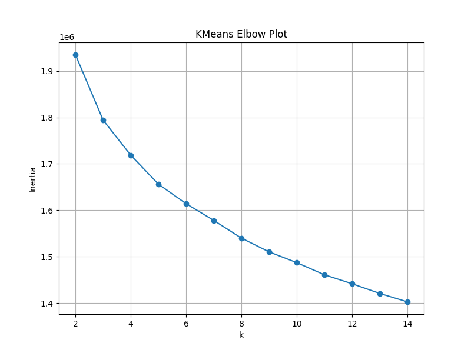
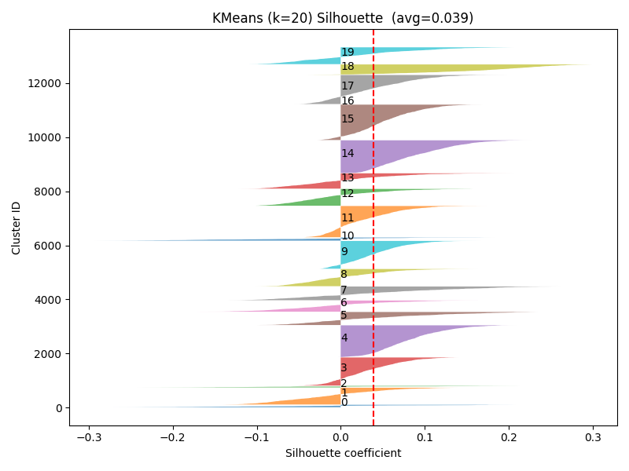
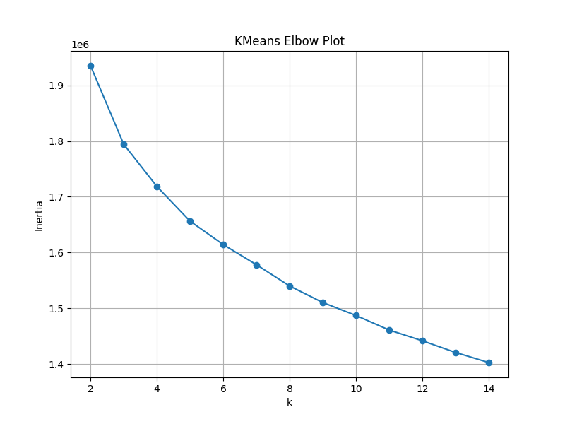
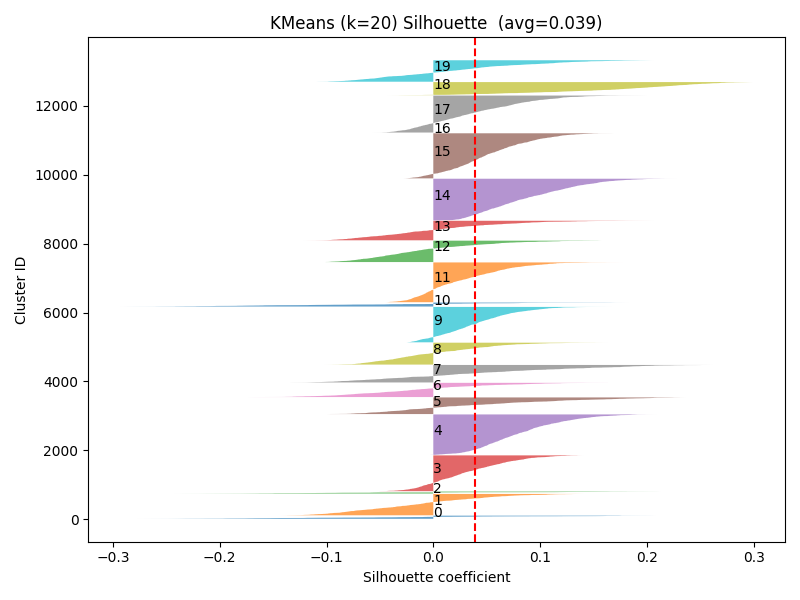
From left to right:
A scatterplot is included to show clusters made by KMeans under a PCA dimensional reduction algorithm. An Elbow plot is also included to demonstrate how many clusters we calcualted to be optimal. Finally, a Silhouette score graph is included to show how we calculated the silhouette scores given to the KMeans test we ran.
UMAP Graphics:

From left to right:
A scatterplot is included to show clusters made by KMeans under a UMAP dimensional reduction algorithm. An Elbow plot is also included to demonstrate how many clusters we calcualted to be optimal. Finally, a Silhouette score graph is included to show how we calculated the silhouette scores given to the KMeans test we ran.
Hybrid Graphics:


From left to right:
A scatterplot is included to show clusters made by KMeans under a hybrid dimensional reduction algorithm. An Elbow plot is also included to demonstrate how many clusters we calcualted to be optimal. Finally, a Silhouette score graph is included to show how we calculated the silhouette scores given to the KMeans test we ran.
KMeans++ Clustering:
KMeans++ is an evolution of the standard KMeans clustering method that changes the way cluster centers are picked. Rather than centroids being picked at random, Kmeans++ picks centroids by selecting one random point, then through several distance calculations the next centroids are picked until the edges of the dataset are found. Once the edges of the data set are found, standard KMeans is ran using those centroids as cluster centers.
Similar to our thought process with KMeans, we selected K = 20 as a better center for our data to compensate for the intertia within our dataset.
Overall for each dimensional reduction test, KMeans++ kept up with its predecessor KMeans with a very small margin of error. In being so similar to KMeans, KMeans++ did also produce one of the higher silhouette scores out of all of the methods we tested. This is due to KMeans and KMeans++ ability to traverse over high density data with a generally continuous topology.
PCA Graphics:
From left to right:
A scatterplot is included to show clusters made by KMeans++ under a PCA dimensional reduction algorithm. Additionally, a Silhouette score graph is included to show how we calculated the silhouette scores given to the KMeans++ test we ran.
UMAP Graphics:


From left to right:
A scatterplot is included to show clusters made by KMeans++ under a UMAP dimensional reduction algorithm. Additionally, a Silhouette score graph is included to show how we calculated the silhouette scores given to the KMeans++ test we ran.
Hybrid Graphics:


From left to right:
A scatterplot is included to show clusters made by KMeans++ under a Hybrid dimensional reduction algorithm. Additionally, a Silhouette score graph is included to show how we calculated the silhouette scores given to the KMeans++ test we ran.
Birch Clustering:
Birch is a clustering algorithm that works by using data summaries comprised of cluster features. These cluster features contain metrics like number of points, euclidean distance values and squared distance values. IF a point being read does not fit within a cluster's summary it is passed to another cluster to be checked. Once checked if it is determined that a point belongs to no current cluster, a new summary is created using that point as a base. This process is then repeated until every data point has been checked.
Birch clustering did not result in very strong silhouette scores throughout each of the three tests we did using different dimensional reduction tools. This is due to the high density of points within the given data. Birch's approach of using data summaries can be good for low density data points, but in the context of the FMA dataset, the clusters were not able to become clearly defined from eachother with this method.
PCA Graphics:


From left to right:
A scatterplot is included to show clusters made by the Birch algorithm under a PCA dimensional reduction algorithm. Additionally, a Silhouette score graph is included to show how we calculated the silhouette scores given to the Birch test we ran. Finally a dendrogram is included in our display to demonstrate the hierarchical clusters made by Birch. Note: Leaf nodes are kept unlabeled as there are too many data points to maintain readability with full labeling.
UMAP Graphics:


From left to right:
A scatterplot is included to show clusters made by the Birch algorithm under a UMAP dimensional reduction algorithm. Additionally, a Silhouette score graph is included to show how we calculated the silhouette scores given to the Birch test we ran. Finally a dendrogram is included in our display to demonstrate the hierarchical clusters made by Birch. Note: Leaf nodes are kept unlabeled as there are too many data points to maintain readability with full labeling.
Hybrid Graphics:
From left to right:
A scatterplot is included to show clusters made by the Birch algorithm under a Hybrid dimensional reduction algorithm. Additionally, a Silhouette score graph is included to show how we calculated the silhouette scores given to the Birch test we ran. Finally a dendrogram is included in our display to demonstrate the hierarchical clusters made by Birch. Note: Leaf nodes are kept unlabeled as there are too many data points to maintain readability with full labeling.
GMM Clustering:
GMM is a clustering method that uses a Gaussian mixture model to determine clusters within the dataset. To do this GMM uses expectation maximization to determine which data points are determined to be true clusters, which entails weighting the probabilities of a point belonging to a certain cluster through a series of metrics. These metrics can include euclidean distance, numerical value, and point averages.
In our tests GMM scored fairly standard in its silhouette score. In fact, in the context of our results, the scores produced by GMM were often the median result of the methods we tested. This is likely a consequence of the data point desnity present within the FMA dataset. If all points are compacted towards eachother, it is through a much slimer margin that clusters are determined and points are assigned as the weights dictating which points belong to which clusters are going to me very similar.
PCA Graphics:


From left to right:
A scatterplot is included to show clusters made by the GMM algorithm under a PCA dimensional reduction algorithm. Additionally, a Silhouette score graph is included to show how we calculated the silhouette scores given to the GMM test we ran. Finally a AIC vs. BIC chart is shown to demonstrate the optimum k-clusters to use for our given dataset.
UMAP Graphics:

 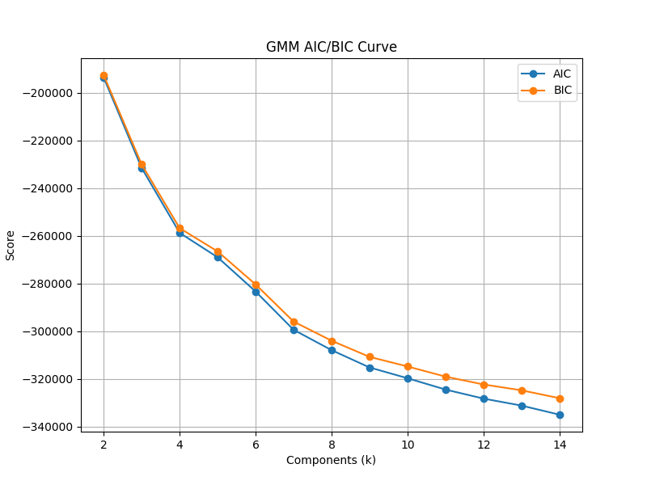
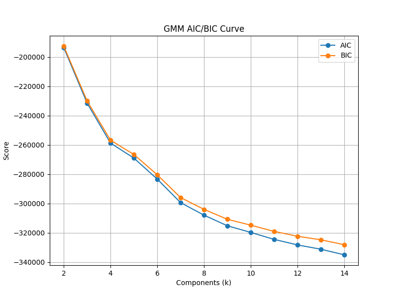
From left to right:
A scatterplot is included to show clusters made by the GMM algorithm under a UMAP dimensional reduction algorithm. Additionally, a Silhouette score graph is included to show how we calculated the silhouette scores given to the GMM test we ran. Finally a AIC vs. BIC chart is shown to demonstrate the optimum k-clusters to use for our given dataset.
Hybrid Graphics:

From left to right:
A scatterplot is included to show clusters made by the GMM algorithm under a Hybrid dimensional reduction algorithm. Additionally, a Silhouette score graph is included to show how we calculated the silhouette scores given to the GMM test we ran. Finally a AIC vs. BIC chart is shown to demonstrate the optimum k-clusters to use for our given dataset.
Agglomerative Clustering:
Agglomerative clustering isn a bottom-up approach to clustering, focusing on creating a higherarchy through a defined linkage type. For this project we opted for the standard "ward" linkage type as it was the default choice and was optimal for limiting variance between datapoints. Once each cluster is defined a hierarchy is then made which can be seen in our dendrogram below.
Agglomerative clustering produced standard results for our testing, though it did produce a very low silhouette score in the PCA dimensional reduction test. While in general, the score produced by the agglomerative tests were standard we believe the low PCA score is a consequence of the continuous topology of the FMA dataset, limiting the difference between data points and thus complicating the higherarchy forming process.
PCA Graphics:
UMAP Graphics:
 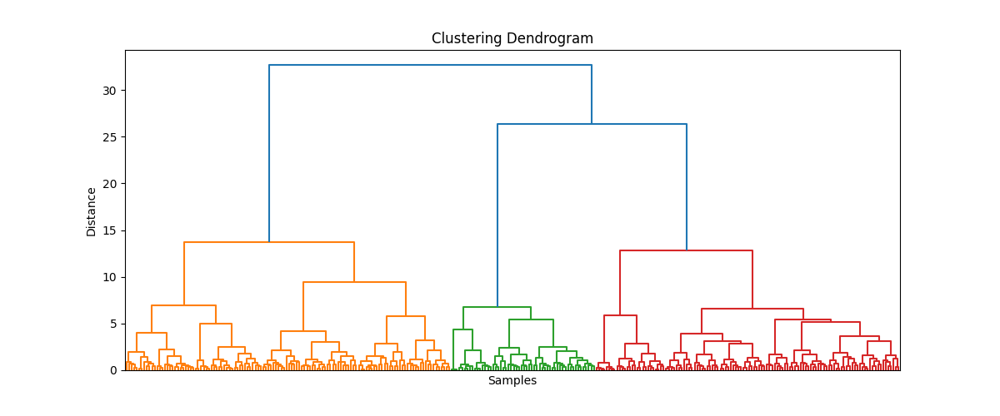
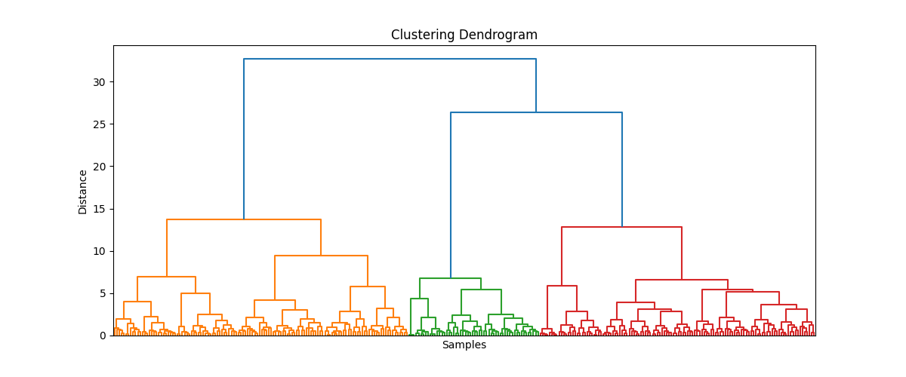
Hybrid Graphics:
 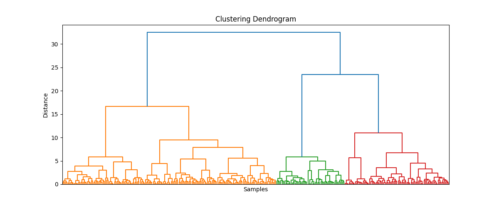
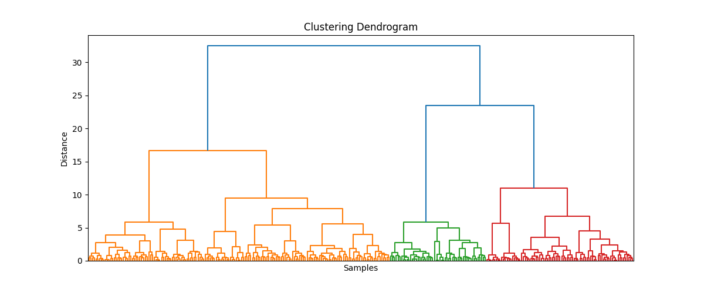
DBSCAN clustering:
DBSCAN is an unsupervised clustering method that works by determining which points are core points by checking if there are a minimum number of points detected within a given radius of the center. This process is then repeated recursively until all points have been considered as potential centers for a respective cluster. Clusters are only considered to be clusters if that minimum threshold is met.
For this project we noticed distinct differences between DBSCAN and the alternative clustering algorithms. DBSCAN produced only one cluster in the PCA run of the dataset and therefore produced no Silhouette score for that run. We believe that the difficulties we experienced with DBSCAN are a consequence of the high density of data points within the data set. DBSCAN is likely grabbing all points near the chosen cluster center points as one cluster creating an imposible cluster for this data.
DBSCAN was an outlier within our results, producing in irregular data that does not fit the general trend created by other clustering methods discussed above. For the PCA dimensional reduction no S-Score was produced, then for the UMAP and Hybrid dimensional reductions, a very large score was produced.
PCA Graphics:
 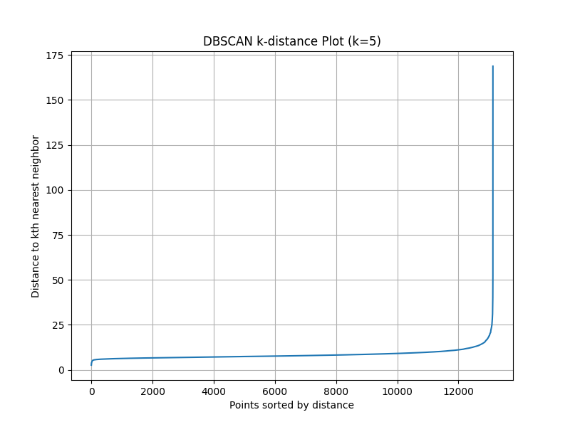
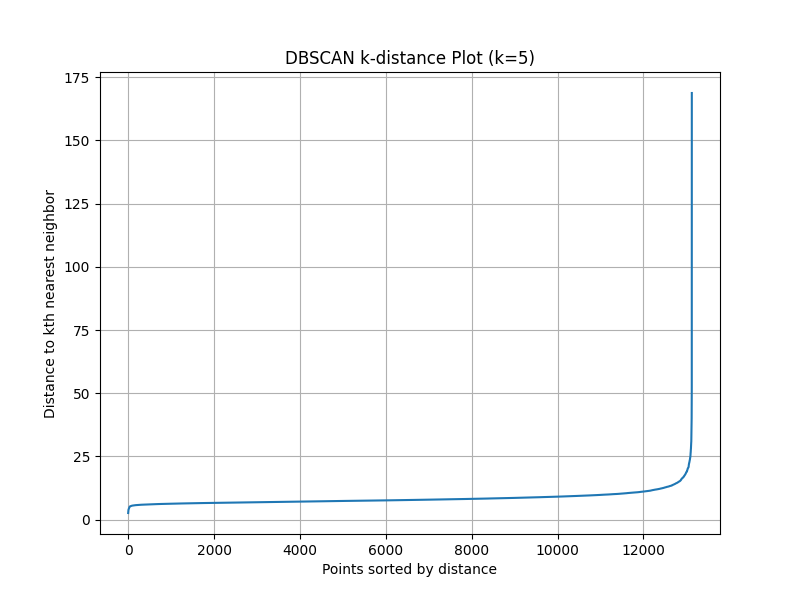
UMAP Graphics:

Hybrid Graphics:
HDBSCAN Clustering:
HDBSCAN is a clustering method that works by searching for different densities of data points on a graph. Once the densities have been determined clusters are defined by the clear shift in densities between "chunks" of data points on a graph. These clusters are then out into a hierarchical structure of a minimum spanning tree. An important requirement for HBDSCAN is that there must be a clear difference in point densities for a cluster to be identified, otherwise it is likely that the data will not be processed properly.
For this project we determined HDBSCAN to be functioning as intended, but we still consider it as outlier method within our results. HDBSCAN is a hierarchical clustering method and therefore requires a well defined topology between points. The FMA dataset posseses a continuous topology which rendered HDBSCAN ineffective at clustering datapoints.
HDBSCAN produced drastically high S-Score values, but only identified very few clusters. This means that for the results of this method must be considered as outliers and abnormal. The performace of HDBSCAN also serves as a piece of evidence that hierarchical algorithms are not well suited for categorizing music data as there are few trends that would result in a clearly defined hierarchy that HDBSCAN would require for creating defined clusters.
PCA Graphics:

 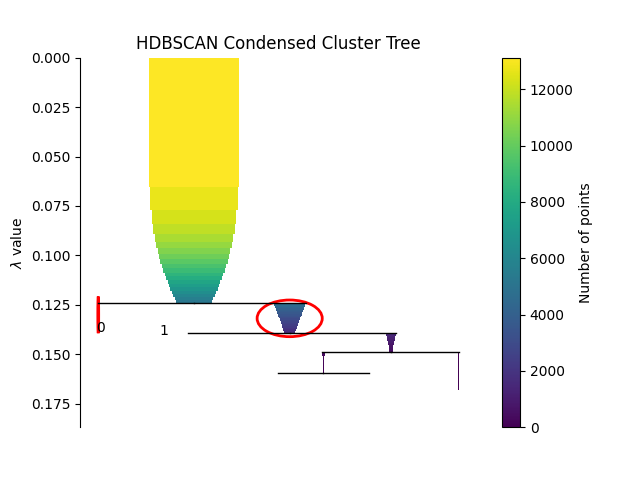
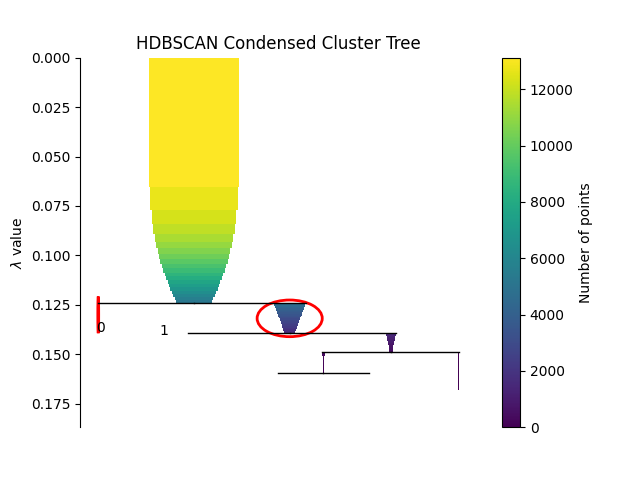
UMAP Graphics:


Hybrid Graphics:
 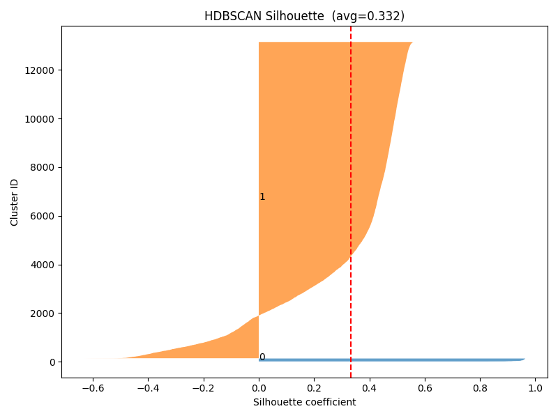
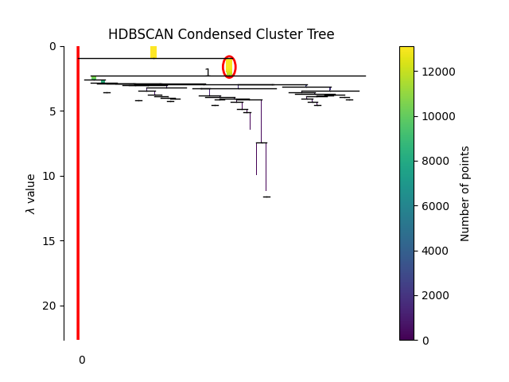
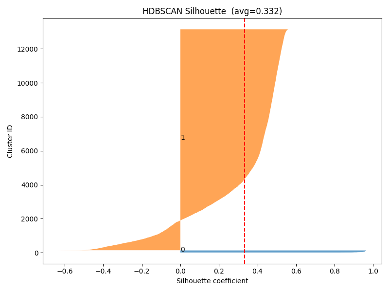
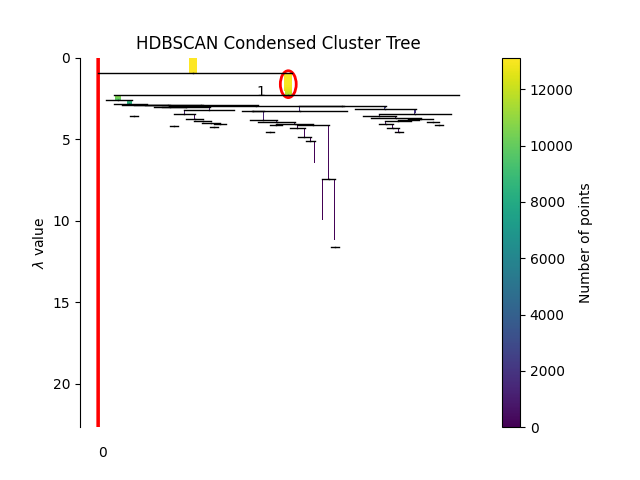
Results:
To conclude, we determined that KMeans and KMeans++ are the most optimum clustering methods to use when working with music data under dimensional reduction. This is due to KMeans/KMeans++ ability to handle high point densities without sacrificing its accuracy. In this context outlier data is not very significant so the standard drawback of noise impacting the methods is not as impactful. While Agglomerative and GMM produced fairly standard results they both suffered drawbacks as a consequence of the dataset's structure. Additionally clustering methods like DBSCAN and HDBSCAN proved non-functional in high density clusters due to the continuous topology of the dataset and the dimensional reduction undertaken during the tests.